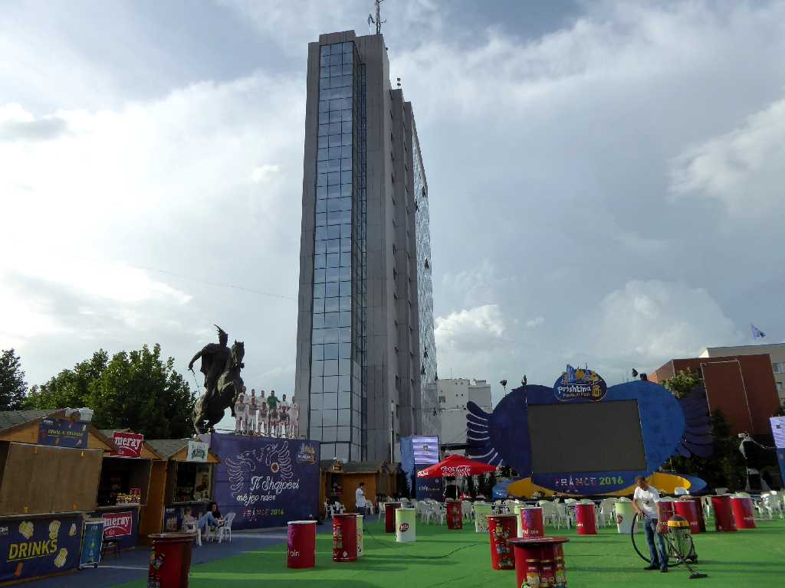
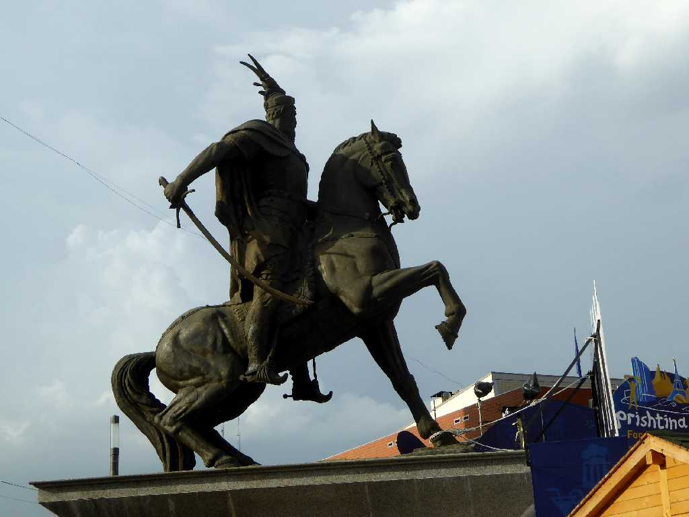
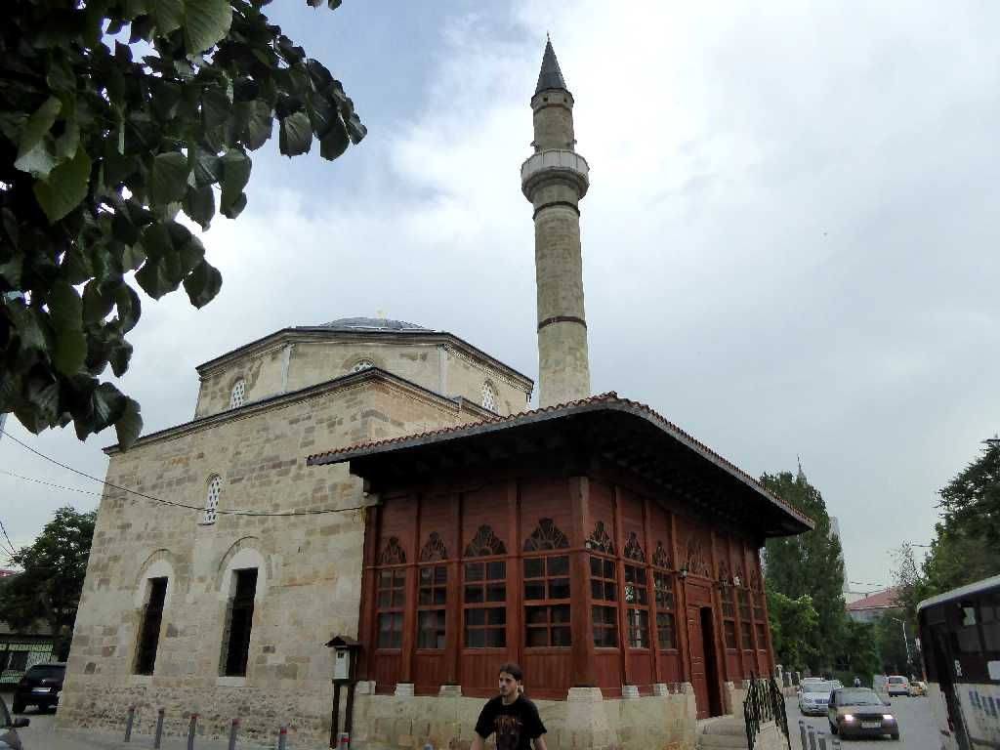
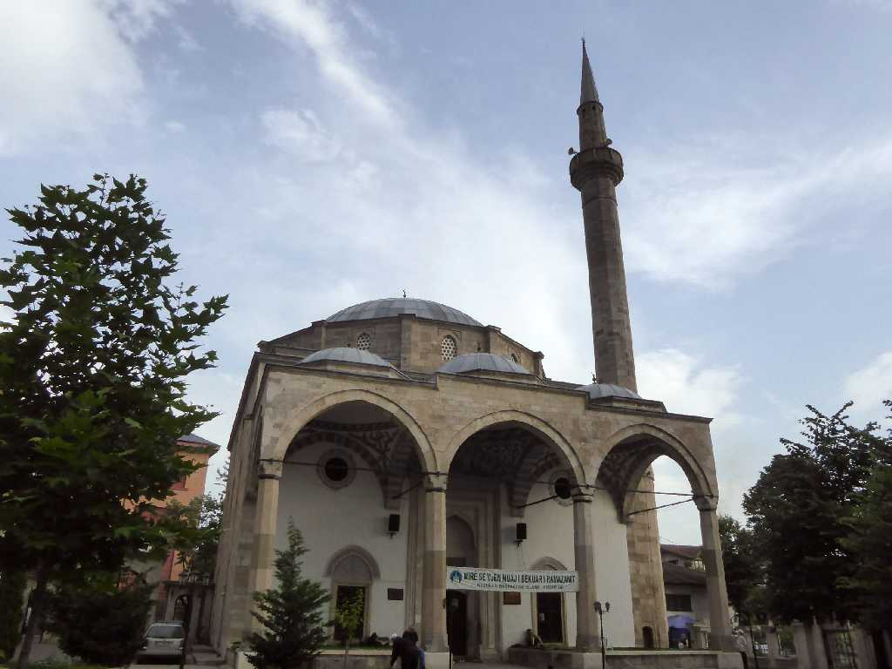
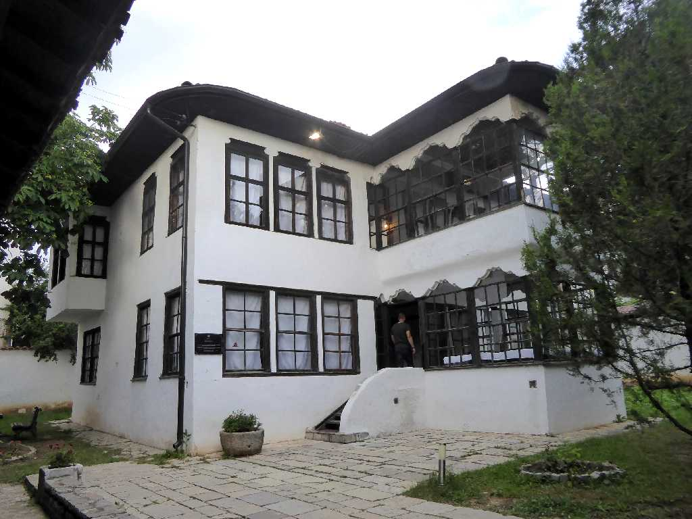
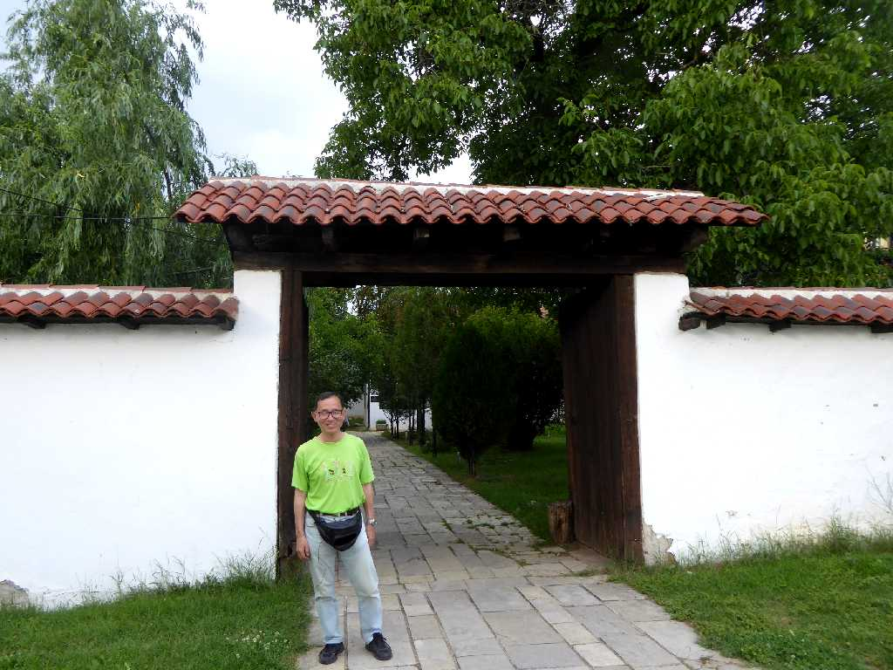

Qeveria e Kosovës Prishtinë
コソボの首都プリシュティナのコソボ政府ビル

Statuja e Skenderbeut
オスマン帝国に抵抗した中世アルバニアのスカンデルベグ騎馬像
Nene Tereza
アルバニアのコソボ州出身のマザーテレサ像

Xhamia e Çarshisë (Charshije Mosque)

Џамија цара (Sultan al-Fatih Mosque)

Ethnographic Museum
１８世紀に創られた邸宅を民族博物館として展示

Reception Room Ethnographic Museum

June 20 2016 Ethnographic Museum